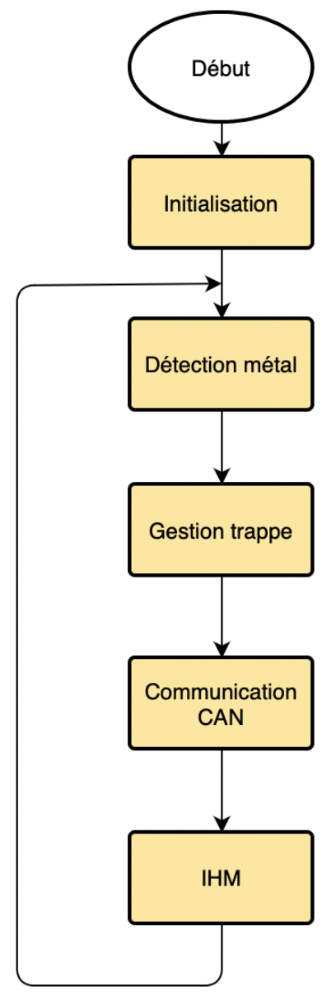

Using a microcontroller
Use of component MCP2551 or
equivalent for the CAN interface
Using an H-bridge module
Using the inductive sensor for metal detection
Use of
mechanical or hall effect limit switch for the hatch
Use of
components for measuring motor current
Use of a USB-UART box for
diagnostics
Minimization of consumption
Low cost
Minimuse printed circuit board size

There is the program of the organization chartclose
#include < DetecteurM.h >
#include < can-18F4580.c >
#define CAN_USE_EXTENDED_ID FALSE
#define
CAN_BRG_SEG_2_PHASE_TS TRUE
#define CAN_BRG_PRESCALARD
15
#define CAN_BRG_SYNCH_JUMP_WIDTH 0
#define
CAN_BRG_PROPAGATION_TIME 2
#define
CAN_BRG_PHASE_SEGMENT_1 5
#define
CAN_BRG_PHASE_SEGMENT_2 5
#define CAN_BRG_WAKE_FILTER
TRUE
#define CAN_BRG_SAM FALSE
void envoi_CAN(void);
void Trappe(void);
void Metal(void);
void rejeter(void);
void
accepter_B(void);
void main()
{
setup_adc_ports(sAN2);
setup_adc(ADC_CLOCK_INTERNAL |ADC_TAD_MUL_0);
can_init();
while(TRUE)
{
Metal();
Trappe();
envoie_CAN();
delay_ms(100);
}
}
void envoi_CAN(void)
{
txbuffer[0]=0x11;
xbuffer[1]=0x22;
an_putd(0x200, &txbuffer[0], 2,
0, FALSE, 0);
}
void Trappe(void)
{
if( rejeter )
{
output_high(PIN_C1);
output_low(PIN_C3);
output_high(PIN_C4);
output_low(PIN_C5);
output_high(PIN_C12);
delay_ms(1000);
}
else
{
output_low(PIN_C1);
output_low(PIN_C3);
output_high(PIN_C4);
output_low(PIN_C5);
output_high(PIN_C2);
delay_ms(1500);
}
}
void Metal(void)
{
if (input(PIN_B0)==1)
{
output_low(PIN_C0);
rejeter();
}
else
{
output_high(PIN_C0);
accepter_B();
}
}
void rejeter(void)
{
output_high(PIN_B5);
delay_ms(1000);
output_low(PIN_B5);
}
void accepter_B(void)
{
output_high(PIN_A3);
delay_ms(1000);
output_low(PIN_A3);
}